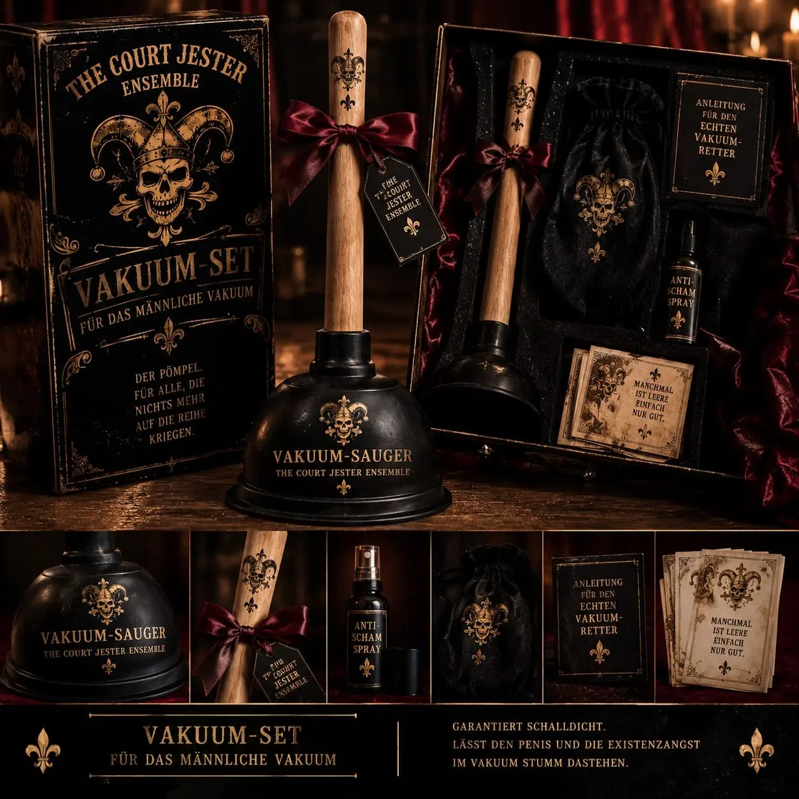
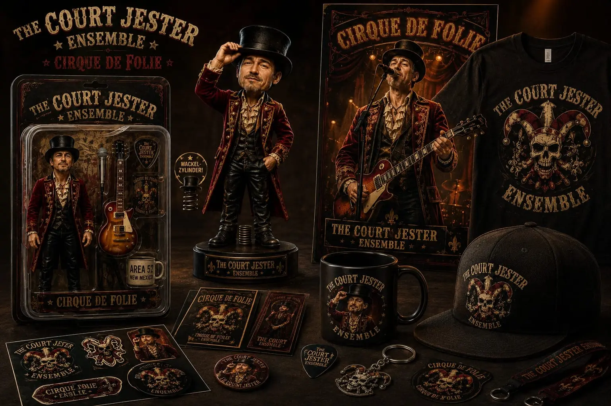
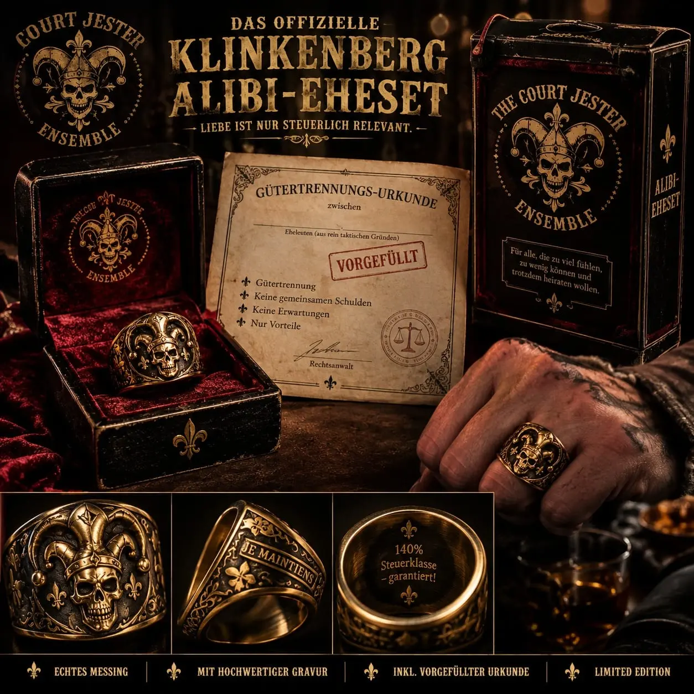
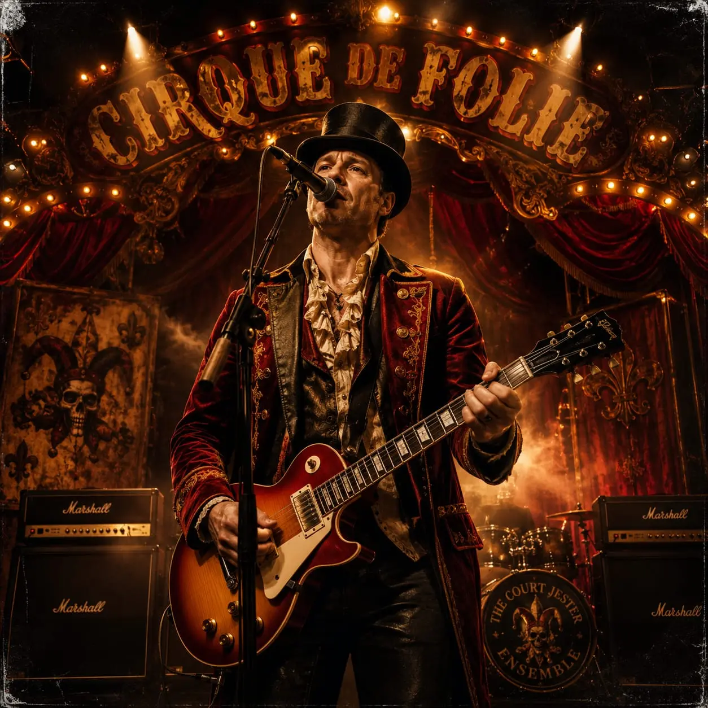
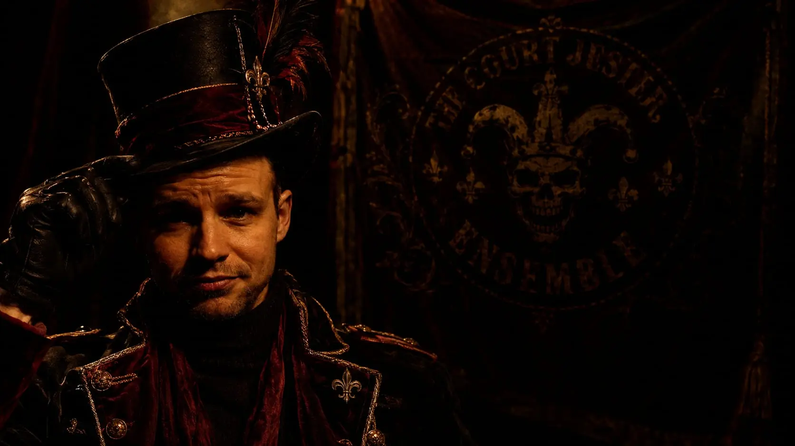

„Dinner für deinen Herzmensch“
Das Gourmet-Kochbuch! Vergessen Sie Candle-Light-Dinners mit unzuverlässigen Dates, die am Ende doch nur über ihren Ex-Partner oder den neuesten Alltags-Mist jammern. Ihr wahrer Herzmensch schnurrt, hat Krallen und verurteilt Sie nicht für Ihre Jogginghose. Kochen Sie sich in das Herz Ihres pelzigen Diktators!
- Das Werk: Ein edel gebundenes Hardcover-Buch voller Rezepte, Ideen und Rituale für ganz besondere, leicht unheimliche Momente zu zweit.
- Der Inhalt: Vom „Mäusestrudel an Whiskas-Reduktion“ bis zum „Thunfisch-Tatar im Kerzenschein“. Inklusive Anleitung, wie Sie Ihrer Katze ein Lätzchen umbinden, ohne dass sie Ihnen das Gesicht zerfleischt.
- Das Versprechen: Wenn das Tinder-Date mal wieder wegen „akuter Müdigkeit“ absagt, bleibt Ihnen immer noch der treueste Begleiter, der Sie zumindest so lange liebt, wie der Napf voll ist. Die ultimative kulinarische Flucht vor dem Alltags-Mist.
„Für das männliche Vakuum“
Der Pömpel für alle, die im Leben einfach nichts mehr auf die Reihe kriegen. Wenn der Druck im Alltag zu groß wird, hilft nur noch der kontrollierte Unterdruck.
- Vakuum-Sauger: Mit echtem Holzgriff und majestätischer Trauer-Schleife.
- Anti-Scham-Spray: Einmal sprühen, und die Peinlichkeit des Moments verfliegt (oder wird zumindest vom intensiven Duft nach billigem Jahrmarkt überdeckt).
- Das Versprechen: Garantiert schalldicht. Lässt den Penis und die Existenzangst im Vakuum stumm dastehen. Manchmal ist Leere einfach nur gut.


Die „Cirque de Folie“ Sammler-Kollektion
Holen Sie sich mit der „Cirque de Folie“ Sammler-Kollektion den Wahnsinn direkt ins Wohnzimmer. Unsere exklusive Merchandise-Linie für den modernen Hofnarren von Welt, angeführt von unserem ewigen Zirkusdirektor.
- Die Actionfigur / Bobblehead: Mit echtem, patentiertem Wackel-Zylinder! Ein sanfter Stupser gegen den Hut, und die Figur nickt zu jeder Ihrer schlechten Lebensentscheidungen. Kommt stilecht mit Miniatur-Gitarre, Mikrofon und der begehrten „Area 52“-Tasse.
- Das versteckte Sound-Gimmick: Diese Figur wackelt nicht nur, sie spricht auch! Machen Sie jede dröge Autofahrt zum ultimativen, psychedelischen Erlebnis. Wollten Sie schon immer mal ein missglücktes Parkmanöver im Berufsverkehr mit den scharfzüngigen Worten des Monsieur Loyal kommentiert haben? Dann seien Sie gespannt auf ein begieriges "Oh-la-la!" oder ein markerschütterndes, französisches "Bonjouuuuuur mesdames et messieurs!", das direkt aus dem eingebauten Mini-Lautsprecher scheppert. Der perfekte Soundtrack für den alltäglichen Wahnsinn auf der Überholspur.
- Das Komplettpaket: Runden Sie Ihr neues Ich ab mit dem offiziellen T-Shirt, der Trucker-Cap für schlechte Haartage, Plektren, Aufklebern und dem „Cirque de Folie“-Kaffeebecher für den bitteren Trank am Morgen.
„Das Klinkenberg Alibi-Eheset“
Das offizielle „Klinkenberg Alibi-Eheset“ Liebe vergeht, aber die Steuerklasse bleibt. Für alle taktischen Romantiker bieten wir die ultimative Lösung zur legalen (oder zumindest sehr kreativen) Steueroptimierung „Liebe ist nur steuerlich relevant.“
- Der Ring: Gefertigt aus echtem, schwerem Messing. Innen filigran graviert mit dem ultimativen Liebesschwur: „140% Steuerklasse – garantiert!“ und „Je Maintiens“ (Ich halte durch – vor allem finanziert).
- Gütertrennungs-Urkunde: Bereits komplett vorgefüllt. Keine gemeinsamen Schulden, keine Erwartungen, nur Vorteile und ein rechtsanwaltlich anmutendes Siegel für den schnellen Frieden.


Das Court Jester Ensemble
Exklusiver Edelschund für die gehobene Existenzangst🃏🎪🎩 Herzlich willkommen. Sie haben viel zu viel gefühlt, zu wenig gekonnt und sind trotzdem hier gelandet? Perfekt. Das Court Jester Ensemble bedient genau die Marktlücke, von der Ihr Therapeuten-Team gehofft hat, dass sie niemals existiert. Wir verkaufen keine Produkte – wir verkaufen die pure, materialisierte Verzweiflung im edlen Rokoko-Totenkopf-Design. Ob finanzielle Scheinehe oder die endgültige Kapitulation vor dem verstopften Abfluss des Lebens: Wir haben das passende Set für Ihr persönliches Desaster. Garantiert unpraktisch, handwerklich fragwürdig und steuerlich absolut relevant.

Unser Qualitätsversprechen
Wir garantieren Ihnen, dass jeder Artikel mit der maximalen Dosis Zynismus und feinstem Auge fürs Detail hergestellt wurde. Unsere Produkte lösen keine Probleme – aber sie sehen verdammt gut aus, während Sie dabei zusehen, wie alles den Bach runtergeht. Jetzt zugreifen, bevor das Finanzamt oder die Sanitär-Innung unsere Seite sperrt!
Kundenbewertungen des puren Wahnsinns
Zum Vakuum-Set „Für das männliche Vakuum“
- Klaus-Dieter M. (57) „Der Klempner war entsetzt, ich bin erlöst“
- „Nachdem ich im Leben wirklich gar nichts mehr auf die Reihe bekommen habe,
- war dieses Set mein letzter Strohhalm.
- saugt nicht nur die Existenzangst aus der Seele, sondern hält auch absolut bombenfest.
- riecht zwar exakt wie eine verlassene Geisterbahn um 3 Uhr morgens,
- aber es wirkt: Meine Frau schämt sich jetzt so sehr für mich, dass
- sie mich endlich komplett in Ruhe lässt. Manchmal ist Leere eben einfach nur gut
- Der Pömpel
- Das Anti-Scham-Spray
- "5 von 5 Vakuum-Sterne!“
Zum „Klinkenberg Alibi-Eheset“
- Manfred B. (42) – „Finanzamt hasst diesen einen Trick!“
- „Ich habe die vorgefüllte Gütertrennungs-Urkunde einfach meiner Katze vorgelegt
- (sie hat mit der Pfote unterschrieben) und trage den schweren Messingring jetzt
- stolz im Büro. Mein Sachbearbeiter beim Finanzamt hat beim Anblick der Gravur
- '140% Steuerklasse – garantiert!' kurz geweint und mich direkt in eine andere Kategorie
- eingestuft. Keine Erwartungen, keine gemeinsamen Schulden, nur Vorteile. Romantik ist tot,
- lebe die Steuerersparnis!“
Zur „Cirque de Folie“ Actionfigur
>-
Chantal K. (31) – „Der beste Beifahrer, den man sich (nicht) wünschen kann“
- „Ich habe mir die Figur aufs Armaturenbrett geklebt. Gestern beim Einparken in eine viel zu enge Lücke
- voll gegen den Bordstein gekracht. Prompt wackelt der Zylinder und aus dem Ding scheppert ein unfassbar
- begieriges 'Oh-la-la!', gefolgt von einem ohrenbetäubenden 'Bonjouuuuuur mesdames et messieurs!'. Die
- Passanten haben geglotzt, mein Auto ist Schrott, aber die Fahrt war das absolut ultimative Erlebnis. Kauft
- das Ding, euer Leben wird nie wieder langweilig sein.“
Zum Gourmet-Kochbuch „Dinner für deinen Herzmensch“
-
Christine S. (39) – „Sie hat das Lätzchen gefressen, aber der Vibe stimmt“
- „Nach dem drittletzten Tinder-Desaster dachte ich mir: Schluss mit dem Alltags-Mist, ich koche jetzt für den
- Chef im Haus. Das 'Thunfisch-Tatar im Kerzenschein' sah fantastisch aus. Meine Katze Minka hat zwar erst versucht,
- mir die Pulsadern aufzuschlitzen, als ich ihr das Lätzchen umbinden wollte, aber am Ende saßen wir schweigend im
- Kerzenschein. Sie starrte mich an, ich starrte sie an. Absolute, vollkommene soziale Isolation im Luxus-Stil.
- Ein Meisterwerk von einem Kochbuch!